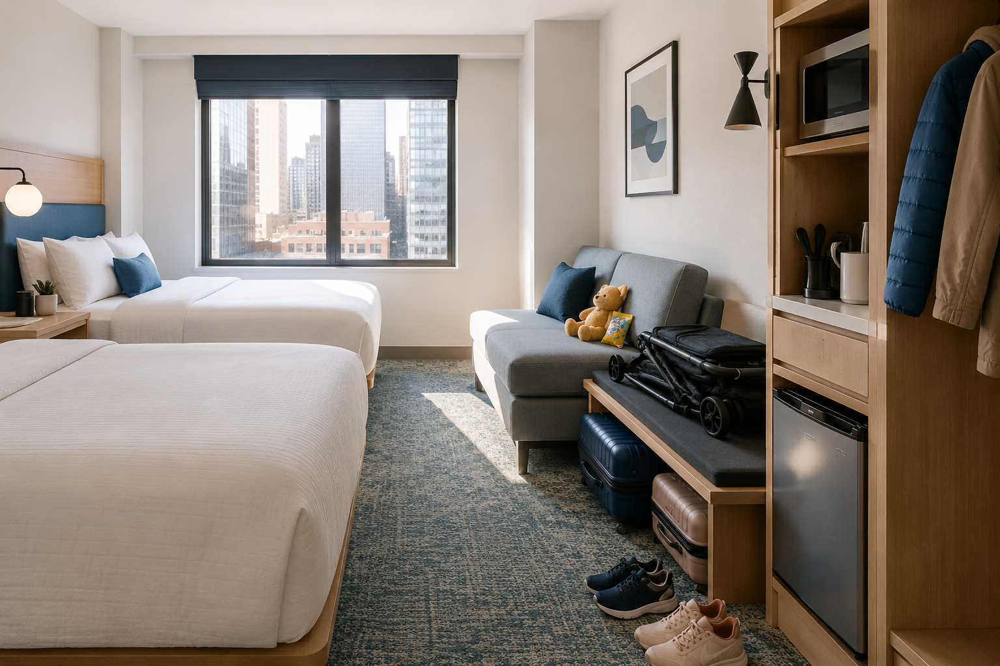
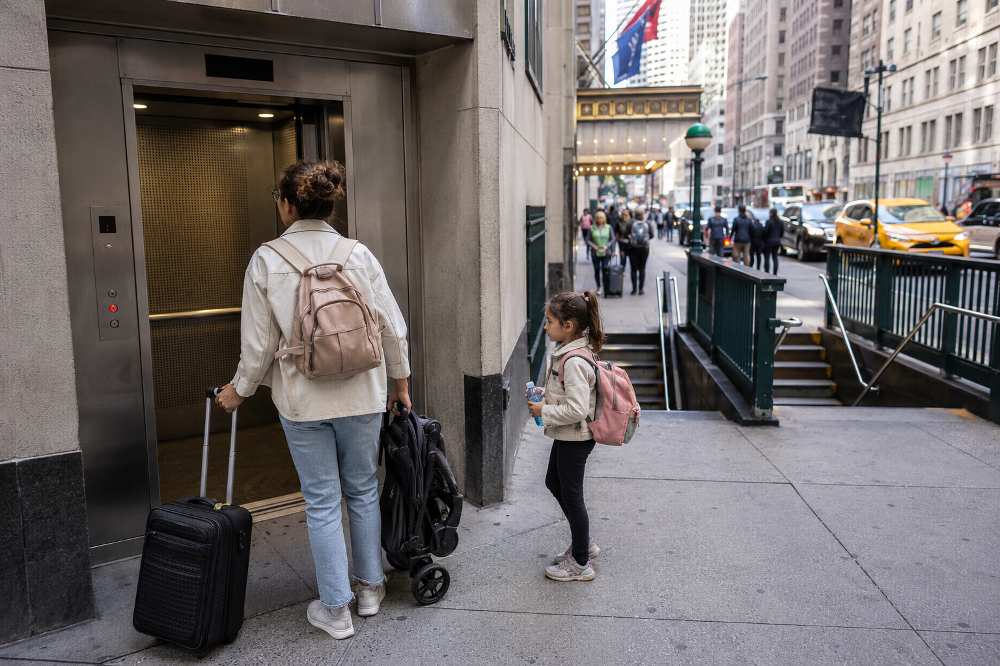

Picking where to stay in New York City with kids is not just about finding the most central hotel.
That is the mistake a lot of families make. They look at the map, see Times Square sitting in the middle of Manhattan, and think, "Perfect. We'll stay there." Then they arrive and realize central can also mean loud sidewalks, tiny rooms, slow elevators, overpriced snacks, crowds outside the hotel door, and no easy place for the kids to decompress after a full day of sightseeing.
The best NYC hotel area for families is the one that makes the whole trip easier. You want enough room to open suitcases, a real bed setup, quick subway access, nearby casual food, a park or playground close enough for emergency energy burn-off, and streets that do not feel exhausting at bedtime.
My overall pick for most families is the Upper West Side. But the right answer depends on your kids, your budget, your itinerary, and how much chaos your family can tolerate before everyone starts quietly losing their minds. Use the NYC Bucket List Map to plan your sightseeing split by neighborhood before you commit to an area.
Quick Answer: Best NYC Hotel Areas For Families
| Family Type | Best Area | Why It Works | Main Catch |
|---|---|---|---|
| Best overall family base | Upper West Side | Quiet, Central Park, AMNH, food, subway | Not as fast for Lower Manhattan |
| Best central compromise | Midtown East / Grand Central | Excellent transit without full Times Square chaos | Still busy near avenues |
| Best first-time central base | Bryant Park / Midtown South | Walkable, subway-rich, close to major sights | Crowded during holidays and weekdays |
| Best for more space in Manhattan | Financial District / Battery Park City | Larger rooms, waterfront, calmer nights | Farther from Central Park and Midtown |
| Best value near Manhattan | Long Island City | Newer hotels, better prices, quick Midtown ride | Exact hotel block matters a lot |
| Best for parks and playgrounds | Upper West Side or Battery Park City | Easy outdoor resets and kid-friendly wandering | Can be expensive in peak season |
| Best for Broadway | Times Square / Theater District | Easy walk home after shows | Noise, crowds, sidewalk stress |
| Best for repeat visitors | Brooklyn Heights / DUMBO or Williamsburg | Neighborhood feel, views, food | Less convenient for classic Midtown sightseeing |
What Families Should Care About Before Booking

Before booking a family hotel in NYC, ignore the pretty lobby photos for a minute and check the details that actually affect your day.
| Booking Detail | Why It Matters in NYC |
|---|---|
| Room square footage | A "standard room" in NYC can feel painfully tight for four people |
| Two real beds | "Sleeps four" may mean one bed plus a sofa bed |
| Bed size | Two doubles are not the same as two queens |
| Connecting rooms | Often requested, not always guaranteed — call directly |
| Bathtub | Many renovated hotels are shower-only, which can be annoying with toddlers |
| Mini fridge or kitchenette | Huge for milk, snacks, leftovers, picky eaters, and early breakfasts |
| Elevator access | Essential with strollers, luggage, grandparents, or tired kids |
| Subway distance | A 12-minute walk feels much longer at 9 PM with a sleeping child |
| Accessible subway stations | "Near subway" does not mean stroller-friendly |
| Noise reviews | Lower floors, avenue-facing rooms, and nightlife blocks can ruin sleep |
| Nearby casual food | You need one easy dinner option within a few blocks |
| Nearby park or playground | Kids need somewhere to move that is not your hotel room |
| Total price | Watch mandatory fees, taxes, parking, breakfast, and rollaway charges |
NYC subway fare is currently $3 for most riders, and OMNY/contactless payment makes it easy to tap with a card, phone, or OMNY card — verify fares close to your travel dates. MTA current fares →
If you are traveling with a stroller, luggage, grandparents, or anyone with mobility needs, check subway elevator access before booking. Some stations are accessible only in certain directions. Some require awkward transfers. Some have no elevator at all. MTA accessible stations map →
Also be careful with Airbnb-style stays. Entire apartment or home rentals for fewer than 30 days are generally not allowed in permanent residential buildings unless specific legal requirements are met. For most family trips, a hotel or legal apartment-style hotel is simpler. NYC short-term rental rules →
Ranked: Best NYC Hotel Areas For Families

| Rank | Area | Space | Transit | Quiet | Parks | Value | Family Score |
|---|---|---|---|---|---|---|---|
| 1 | Upper West Side | 8/10 | 8/10 | 9/10 | 10/10 | 7/10 | 9/10 |
| 2 | Midtown East / Grand Central | 7/10 | 10/10 | 7/10 | 6/10 | 6/10 | 9/10 |
| 3 | Bryant Park / Midtown South | 6/10 | 10/10 | 6/10 | 7/10 | 6/10 | 8/10 |
| 4 | Financial District / Battery Park City | 9/10 | 8/10 | 8/10 | 9/10 | 8/10 | 8/10 |
| 5 | NoMad / Flatiron | 6/10 | 9/10 | 7/10 | 8/10 | 6/10 | 8/10 |
| 6 | Long Island City | 8/10 | 8/10 | 7/10 | 7/10 | 9/10 | 8/10 |
| 7 | Upper East Side | 7/10 | 7/10 | 9/10 | 9/10 | 6/10 | 7/10 |
| 8 | Chelsea / Union Square Edge | 6/10 | 9/10 | 6/10 | 8/10 | 6/10 | 7/10 |
| 9 | Downtown Brooklyn / Brooklyn Heights | 8/10 | 8/10 | 8/10 | 9/10 | 7/10 | 7/10 |
| 10 | Times Square / Theater District | 5/10 | 10/10 | 3/10 | 4/10 | 5/10 | 6/10 |
| 11 | Williamsburg | 7/10 | 7/10 | 5/10 | 7/10 | 6/10 | 6/10 |
| 12 | Jersey City / Hoboken | 9/10 | 6/10 | 7/10 | 7/10 | 8/10 | 5/10 |
The Upper West Side is the NYC family hotel area I would recommend first to most parents. It is not the flashiest answer, which is exactly why it works. You get Central Park, Riverside Park, the American Museum of Natural History, the Children's Museum of Manhattan, playgrounds, bagel shops, diners, grocery stores, pharmacies, and a neighborhood rhythm that feels more human after a long day of sightseeing.
This is the area where coming back to the hotel does not feel like entering another attraction. It feels like a reset. Hotel Beacon is worth checking because it offers kitchenettes and larger studio/suite layouts — the kind of detail that matters when your child wakes up hungry at 6:15 AM and you are not ready to negotiate with a Midtown breakfast line. Hotel Beacon official rooms →
Central Park is also not just "nice to have." With kids, it is infrastructure. You get playgrounds, open space, benches, bathrooms, shade, and a place to let everyone stop being civilized for 20 minutes. Central Park restroom map → • For rest stops throughout the day: Best Places to Sit Down and Rest Near Major NYC Attractions →
Midtown East is not as charming as the Upper West Side, but it is extremely useful. And with kids, useful is underrated. This area works well if you want easy subway access, Grand Central nearby, quick taxis, simple airport transfers, and a central base that does not dump you into Times Square every time you leave the hotel. It is especially strong for families traveling with grandparents or kids who cannot handle long walks between transit points. Look for suite-style or extended-stay hotels here — a kitchenette, fridge, or included breakfast can make mornings dramatically easier.
Bryant Park and Midtown South are excellent if you want to stay central but avoid the most intense parts of Times Square. This is one of the best areas for a short first-time family trip because you can walk to a lot: New York Public Library, Bryant Park, Grand Central, Times Square, Broadway theaters, Rockefeller Center, Fifth Avenue, Herald Square, and plenty of subway stations.
Bryant Park itself is the secret weapon. It gives families a place to sit, snack, use nearby facilities, and reset without going all the way back to the hotel. See: Best Rest Stops Near Major NYC Attractions → • Compared with Times Square, it gives you a little breathing room.
The Financial District is one of the most underrated family hotel areas in NYC. It does not have the classic "cute neighborhood" feeling of the Upper West Side, but it has a lot that families actually need: bigger rooms, calmer evenings, waterfront walks, Battery Park, ferry access, the 9/11 Memorial, One World Observatory, South Street Seaport, and strong subway connections through Fulton Center.
Battery Park City is especially good with younger kids because the waterfront paths, playgrounds, and open spaces make the city feel less compressed. Conrad New York Downtown has suites starting around 430 square feet, and Mint House at 70 Pine has kitchen/kitchenette-style layouts, including larger options for families. Conrad New York Downtown → • Mint House at 70 Pine →
For what to do in this area: Lower Manhattan Walking Itinerary → • How to Visit the Statue of Liberty →
NoMad and Flatiron are excellent for families who want central Manhattan but prefer a more adult, food-friendly, neighborhood-style feel than Times Square. You get Madison Square Park, Eataly, Koreatown nearby, good restaurants, easy subway access, and a convenient position between uptown and downtown. It works especially well with older kids and teens. Madison Square Park is the family convenience anchor: it gives you a playground, benches, shade, and a quick reset between hotel and sightseeing.
For rest stop planning in this area: Best Places to Sit Down and Rest Near Major NYC Attractions → • For packing for any family trip: NYC Packing List by Season →
Long Island City can be a smart family hotel base, but only if you choose the right block. The good version of LIC is great: newer hotels, larger rooms, better rates, fast subway access to Midtown, skyline views, waterfront parks, and less tourist pressure. The bad version is miserable: cheap hotel, long walk to the subway, empty-feeling streets at night, and kids asking why you are still not "in New York" after a full day of sightseeing.
If you stay here, the subway walk matters more than almost anything. A hotel one block from Queens Plaza or Court Square is a totally different experience from one that requires a long walk with tired kids. MTA Queens neighborhood routes →
The Upper East Side is polished, quiet, and excellent for families planning a museum-heavy trip. You are near Central Park, the Met, Guggenheim, Museum Mile, Central Park Zoo, and family-friendly restaurants. The streets generally feel calmer than Midtown, especially once you are away from the biggest avenues. The Upper East Side can be excellent, but it is not as universally useful as the Upper West Side because there are fewer hotel choices and some tourist routes take more effort. See: If You Can Only Visit One Museum in NYC, Which Should It Be? →
This area works best for families with older kids or teens. You get Chelsea Market, the High Line, Union Square, Flatiron, great food, shopping, multiple subway lines, and easy downtown access. It feels more interesting than Midtown and more central than Brooklyn. Chelsea Market and the High Line are fun, but they can get packed — I would not build a young-kid trip around them, but teens usually handle this area well. See: One Day in Chelsea NYC: The Perfect Walking Itinerary →
If you want Brooklyn with kids, Brooklyn Heights and nearby Downtown Brooklyn are the easiest places to start. Brooklyn Heights gives you brownstone streets, the Promenade, calmer evenings, and quick access to Brooklyn Bridge Park. Downtown Brooklyn gives more hotel options and stronger subway access, but the exact block matters. Brooklyn Bridge Park is a huge family asset — it has playgrounds, waterfront paths, food options, seating, views, and enough space for kids to move. Brooklyn Bridge Park official site →
For sightseeing in the area: One Day in Brooklyn: DUMBO, Brooklyn Bridge & Beyond →
Times Square is not automatically bad for families. It is just bad as the default answer. If you are seeing multiple Broadway shows, have older kids who want the bright lights, or are doing a short first-time trip where spectacle matters more than sleep, staying nearby can be convenient. But Times Square is also loud, crowded, expensive, overstimulating, and not relaxing. The sidewalks can feel like an obstacle course. Casual food can be overpriced and mediocre. Lower-floor rooms can be noisy. And after a long day, the last thing some families need is more stimulation outside the hotel door. Times Square official visitor guide →
For Christmas trips in this area: The Best NYC Christmas Walking Route →
Williamsburg can be great with kids if your family likes food, parks, ferry rides, skyline views, and a more neighborhood-based trip. But for first-time families focused on Central Park, Broadway, Midtown, and classic sightseeing, Williamsburg adds travel friction. It also has nightlife, which means some blocks are not ideal for bedtime. For ferries in the area: Best NYC Ferry Routes for Tourists, Ranked →
Jersey City and Hoboken can work for families who want bigger rooms, skyline views, and possible savings. But this is not the same as staying in NYC. The PATH train is separate from the NYC subway system, so you are adding another transit layer. That may be fine for adults. With kids, strollers, late nights, and packed itineraries, it can start to feel like one extra step too many.
Best Areas By Family Type
| Family Situation | Best Area | Why |
|---|---|---|
| Family of four | Upper West Side, FiDi, Long Island City | Better chance of real space or suite layouts |
| Toddlers | Upper West Side, Battery Park City | Parks, calmer streets, bathrooms, early dinner options |
| Teens | NoMad, Flatiron, Chelsea, Williamsburg | Food, shopping, subway access, more independence |
| Stroller family | Midtown East, Upper West Side, FiDi | Better station options if planned carefully |
| Kids + grandparents | Midtown East / Grand Central | Easy transit, taxis, fewer awkward transfers |
| First-time family trip | Upper West Side or Bryant Park | Best balance of sightseeing and sanity |
| Budget-conscious family | Long Island City or FiDi | Better value without going too far |
| Broadway-focused family | Theater District / Times Square | Easy walk back after shows |
| Museum-focused family | Upper West Side or Upper East Side | AMNH, Met, Central Park, Museum Mile |
| Christmas family trip | Bryant Park, Midtown East, Upper West Side | Close to holiday sights without sleeping in the worst crowds |
| Summer family trip | Upper West Side, Battery Park City, Brooklyn Heights | Parks, shade, waterfront, space to decompress |
| Rainy trip | Midtown East, Bryant Park, NoMad | Easy subway access and indoor attractions |
For rainy-day planning: Best Rainy-Day Attractions in NYC →
Manhattan vs Queens vs Brooklyn vs Jersey City
| Base | Pros | Cons | Best For |
|---|---|---|---|
| Manhattan | Easiest sightseeing, simplest first trip, best transit density | Smaller rooms, higher prices | First-timers and short trips |
| Queens / Long Island City | Better value, newer hotels, quick Midtown access | Less classic NYC feel, exact block matters | Budget families |
| Brooklyn | Calmer evenings, parks, skyline views, food | Longer Midtown commute | Repeat visitors and slower trips |
| Jersey City / Hoboken | Bigger rooms, views, possible savings | PATH adds complexity, not NYC | Longer stays and value hunters |
For a first family trip, I usually recommend Manhattan unless the savings outside Manhattan are genuinely meaningful. The cheaper hotel is not always cheaper if it costs you time, energy, extra transit, and one parent's will to continue.
Family Hotel Booking Mistakes To Avoid
How Important Is Subway Elevator Access With Kids?

Very important. If you have a stroller, luggage, grandparents, or a child who may fall asleep before you get back to the hotel, subway elevator access can change the whole trip. A hotel three minutes from a non-accessible station may be less convenient than a hotel seven minutes from an accessible one.
Also, do not assume elevator access is simple just because a station is listed as accessible. Some stations have multiple entrances, direction-specific elevators, long passageways, or transfers that are technically possible but deeply annoying with kids. The best move is to check the exact station entrance near your hotel before booking. MTA accessible stations map →
Sample Family Hotel Area Matches
FAQ: Best NYC Hotel Areas For Families
Where should families stay in NYC for the first time?▾
Is Times Square too loud for kids?▾
Is the Upper West Side good for tourists?▾
Is Long Island City convenient for families?▾
Is the Financial District good for families?▾
Are NYC hotel rooms really that small?▾
Should families book one room, a suite, or two connecting rooms?▾
Can families use Airbnb in NYC?▾
Should families stay near Central Park?▾
Should families stay in Manhattan or Brooklyn?▾
Which NYC area is quiet but still convenient?▾
What is the best subway area for families?▾
What should families check before booking a NYC hotel?▾
Final Verdict: Where I Would Stay With Kids In NYC
If I were choosing for a first family trip, I would start with the Upper West Side. It gives you the best balance of quiet, parks, subway access, family food, museums, and a neighborhood that does not feel like a punishment at the end of the day.
If you want to stay central, I would choose Midtown East or Bryant Park before Times Square. If you need more space or better value, I would look at Financial District / Battery Park City or a very subway-close Long Island City hotel. And if Broadway is the whole point of the trip, Times Square can work. Just choose it knowingly.
With kids, your hotel neighborhood is not just where you sleep. It becomes your recovery zone, snack zone, bathroom zone, backup dinner zone, and "we need to go back before everyone collapses" zone. Pick the right base, and NYC feels big, exciting, and manageable. Pick the wrong one, and suddenly every subway stair, tiny room, and crowded sidewalk becomes part of the itinerary.
For the family itinerary once you have picked your base: 5 Days in NYC: The Ultimate First-Time Itinerary → • NYC in 4 Days: Relaxed vs Maximum-Sightseeing Itinerary →